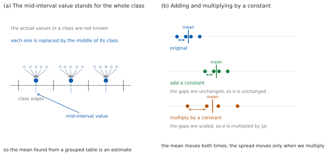

SL 4.3 — Measures of central tendency and dispersion（代表値と散らばり）
- mean（平均）・median（中央値）・mode（最頻値）を求め、どれを使うべきかを述べられる。
- 度数分布表から mean を求められる。
- グループ化された表から、mid-interval value（階級値）を使って mean を推定できる。
- modal class（最頻階級）を答えられ、なぜ mode ではないのかを言える。
- standard deviation（標準偏差）と variance（分散）の関係が分かり、\(\sigma_x\) と \(s_x\) を選べる。
- データ全体に定数を足したりかけたりしたとき、mean と standard deviation がどうなるかを言える。
The idea
1. mean・median・mode の \(3\) つ
代表値（measure of central tendency）は \(3\) つあります。
- mean（平均）… 全部足して個数で割る。すべての値が効きます。
- median（中央値）… 小さい順に並べたまん中。順番だけで決まります。
- mode（最頻値）… いちばん多く現れる値。\(2\) つ以上あることも、\(1\) つもないこともあります。
\(3\) つとも「まん中あたり」を表しますが、外れ値への強さがちがいます。
2. どれを代表値に使うか
| 場面 | 使うもの | 理由 |
|---|---|---|
| ふつうのデータ | mean | すべての値を使う |
| 外れ値がある | median | 外れ値に動かされない |
| 数でないもの（色・血液型） | mode | 足し算も並べかえもできない |
理由をつけて選びます。 「median を使う」だけでは足りません。「外れ値が \(1\) つあり、mean はそれに引かれるので median を使う」まで書きます。
3. 度数分布表からの mean
値 \(x_i\) が \(f_i\) 回ずつ現れるなら、足し算は \(\sum f_i x_i\) です。
\[ \bar{x} = \frac{\sum_{i=1}^{k} f_i x_i}{n}, \qquad n = \sum_{i=1}^{k} f_i \tag{1}\]
\(\bar{x} = \dfrac{\sum f_i x_i}{n}\) は、公式集の 4.3 の欄にあります。試験中に配られるので、覚える必要はありません。
\(n\) が「度数の合計」であることが大事です。 階級の個数ではありません。
\(x\) をそのまま足さないでください。 \(x\) の値が \(5\) 種類あっても、データは \(n\) 個あります。\(f\) をかけてから足します。
4. グループ化された表 — mid-interval value
階級にまとめられていると、\(1\) つずつの値は分かりません。そこで、各階級の値を代表する \(1\) つの数を決めて計算します。シラバスは、その決め方を指定しています。
Students should use mid-interval values to estimate the mean of grouped data.
mid-interval value（階級値）は、階級の上端と下端の平均です。
\[ \text{mid-interval value} = \frac{(\text{下端}) + (\text{上端})}{2} \tag{2}\]
\(50 \le v < 70\) なら \(\dfrac{50 + 70}{2} = 60\) です。この \(60\) を、その階級のすべての値に使います（図 1 の (a)）。
だから答えは estimate（推定値）です。もとのデータから直接出した mean とは、ふつう一致しません。
\(50 \le v < 70\) に \(50\) を使うと、その階級の値をすべて \(10\) ずつ小さく見積もることになります。
全部の階級で同じ向きにずれるので、mean 全体が小さく出ます。\(1\) か所のミスではありません。
5. modal class と、四分位数の求め方
modal class（最頻階級）は、度数がいちばん大きい階級です。グループ化された表では、いちばん多く現れる値は分からないので、mode ではなく modal class を答えます。
階級の幅がすべて同じときだけ使えます。幅が違うと、幅の広い階級ほど度数が大きくなりやすいので、度数をそのまま比べても、どこに値が集まっているかは分かりません。
答えるのは階級です。 度数ではありません。「\(9\)」のような度数ではなく、「\(50 \le v < 70\)」のように階級を書きます。
四分位数の求め方は、\(1\) つではありません。 手で数える方法（SL 4.1）と、電卓が使う方法がちがうことがあります。同じデータでも \(Q_1\) の値が変わりえます。
どちらの方法を使ったかが分かるように書きます。 Paper 1 なら手で数えます。Paper 2 で電卓を使ってよいなら、電卓の値をそのまま使います。
6. standard deviation と variance
standard deviation（標準偏差）\(\sigma\) は、値が mean からどれだけ散らばっているかを表す数です。
- 同じ単位です。データが cm なら \(\sigma\) も cm です。
- \(0\) 以上です。負にはなりません。
- \(\sigma = 0\) になるのは、すべての値が等しいときだけです。
variance（分散）は、その \(2\) 乗です。
\[ \text{variance} = \sigma^{2} \tag{3}\]
単位は \(2\) 乗になります。 データが cm なら variance は \(\text{cm}^{2}\) です。だから、散らばりを言葉で述べるときは \(\sigma\) のほうを使います。
\(\sigma\) の式は公式集にありません。 SL では、値そのものは電卓で出します。式を覚える必要はありません。
電卓は標準偏差を \(2\) つ出します。 \(\sigma_x\)（population standard deviation）と \(s_x\)（sample standard deviation）です。答案に書くのは \(\sigma_x\) のほうです。
電卓は \(2\) つ出します。\(\sigma_x\)（population standard deviation）と \(s_x\)（sample standard deviation）です。
シラバスは、Topic 4 の冒頭でこう決めています（SL 4.1）。問題文が何も言わなければ、与えられたデータを population として扱います。
だから、答案に書くのは \(\sigma_x\) のほうです。\(s_x\) は \(\sigma_x\) より少し大きな値です。差は小さいので、見て気づくのではなく、どちらの欄を読むかを決めておくようにしてください。
Paper 1 では、データから標準偏差を計算することは求められません。 このページの例題と演習でも、\(\sigma\) か variance のどちらかが与えられていて、計算するのは平方根と \(2\) 乗だけです。
7. データ全体を動かすとどうなるか
すべての値に同じことをすると、mean と \(\sigma\) は次のように変わります（図 1 の (b)）。
| したこと | mean | standard deviation |
|---|---|---|
| すべてに \(c\) を足す | \(\bar{x} + c\) | 変わらない |
| すべてに \(a\) をかける | \(a\bar{x}\) | \(\lvert a \rvert \sigma\) |
| \(ax + c\) にする | \(a\bar{x} + c\) | \(\lvert a \rvert \sigma\) |
足しても \(\sigma\) が変わらないのが要点です。 全体が同じだけ動くので、値どうしの間隔が変わらないからです。\(\sigma\) は間隔を測っているので、動いても同じです。
かけると間隔も \(\lvert a \rvert\) 倍になります。 だから \(\sigma\) も \(\lvert a \rvert\) 倍です。\(a\) が負でも散らばりは負になりません。

Why it works
なぜ、\(\sigma\) は足し算で変わらないのでしょうか。 \(\sigma\) が測っているのは「mean からのずれ」です。すべての値に \(c\) を足すと、mean も \(c\) 増えます。
\[ (x_i + c) - (\bar{x} + c) = x_i - \bar{x} \]
ずれが \(1\) つも変わりません。だから \(\sigma\) も変わりません。
なぜ、かけ算では \(\lvert a \rvert\) 倍なのでしょうか。 すべての値に \(a\) をかけると、mean も \(a\) 倍になり、ずれは
\[ a x_i - a\bar{x} = a(x_i - \bar{x}) \]
で \(a\) 倍になります。\(\sigma\) はずれの大きさから作られる数なので、どのずれも \(\lvert a \rvert\) 倍になれば、\(\sigma\) も \(\lvert a \rvert\) 倍になります。\(a\) が負のときも散らばりは正なので、絶対値が付きます。
なぜ、mid-interval value を使うのでしょうか。 階級の中のどこに値があるかは、表からは分かりません。分からないなら、どちらにも寄せないのが公平です。まん中を使うと、階級の中で値が上寄りでも下寄りでも、ずれの向きが決まりません。
下端を使うと話が変わります。どの階級でも必ず小さめになるので、ずれが全部同じ向きに積み上がります。これが、上の callout で「\(1\) か所のミスではない」と書いた理由です。
なぜ、mean は外れ値に弱いのでしょうか。 mean はすべての値を足すので、\(1\) つの値が大きくなると、その分がそのまま合計に乗ります。\(1\) つの値が \(d\) だけ大きくなると、mean は \(\dfrac{d}{n}\) だけ動きます。\(n\) が小さいほど、\(1\) つの値の効きめが大きくなります。
median は順番しか見ません。いちばん大きい値がどれだけ大きくなっても、それがいちばん大きいままなら順番は変わらないので、median は動きません（データが \(3\) 個以上のとき）。これが「median は外れ値に強い」という言葉の中身です。
Worked examples
問題文は英語です。意味が理解できなかったら、問題文の下の「日本語訳」を開いてください。解説は日本語です。
例題も演習も、すべて電卓なしで解けます。 Paper 1 のつもりで解いてください。標準偏差の値は、必要なところでは与えられています。
例題 1 The table shows the number of times each of \(30\) students visited the library last week.
| visits \(x\) | \(0\) | \(1\) | \(2\) | \(3\) | \(4\) |
|---|---|---|---|---|---|
| frequency \(f\) | \(4\) | \(8\) | \(10\) | \(6\) | \(2\) |
(a) Find the mean.
(b) Write down the mode.
(c) Find the median.
(d) Find \(Q_1\), \(Q_3\) and the interquartile range.
日本語訳
表は、\(30\) 人の生徒が先週それぞれ何回図書館を訪れたかを示しています。
| 訪れた回数 \(x\) | \(0\) | \(1\) | \(2\) | \(3\) | \(4\) |
|---|---|---|---|---|---|
| 度数 \(f\) | \(4\) | \(8\) | \(10\) | \(6\) | \(2\) |
(a) 平均を求めなさい。
(b) 最頻値を書きなさい。
(c) 中央値を求めなさい。
(d) \(Q_1\)、\(Q_3\) および四分位範囲を求めなさい。
(a) \(\sum f x\) を出してから \(n\) で割ります（式 1）。
\[ \sum f x = 0 \times 4 + 1 \times 8 + 2 \times 10 + 3 \times 6 + 4 \times 2 = 54 \]
\[ n = 4 + 8 + 10 + 6 + 2 = 30, \qquad \bar{x} = \frac{54}{30} = 1.8 \]
(b) 度数がいちばん大きいのは \(f = 10\) で、そのときの \(x\) は \(2\) です。
\[ \text{mode} = 2 \]
(c) 累積度数は \(4, \ 12, \ 22, \ 28, \ 30\) です。値が \(1\) つずつ分かっている表なので、\(\dfrac{n}{2}\) の位置を読むのではなく、小さい順に数えます（SL 4.2）。\(n = 30\) なので、median は \(15\) 番目と \(16\) 番目の平均です。どちらも \(2\) です。
\[ \text{median} = 2 \]
(d) 下半分（\(1\)〜\(15\) 番目）の中央値が \(Q_1\) で、\(8\) 番目です。上半分（\(16\)〜\(30\) 番目）の中央値が \(Q_3\) で、\(23\) 番目です。
\[ Q_1 = 1, \qquad Q_3 = 3, \qquad \mathrm{IQR} = 3 - 1 = 2 \]
検算（(a) について）。 範囲に入っているか見ます。 データは \(0\) から \(4\) のあいだなので、mean も \(0\) と \(4\) のあいだのはずです。\(1.8\) ✓ \(54\) のような値が出たら、\(n\) で割り忘れています。
検算（(a) について、誤りの側）。 \(x\) をそのまま足した場合と比べます。 \(0+1+2+3+4 = 10\) を \(5\) で割ると \(2\) です。正しい \(1.8\) とちがいます ✓ 度数の重みが効いています。
検算（(b) について）。 答えが \(x\) の値になっているか見ます。 mode は「いちばん多く出た回数」ではなく「いちばん多く出た \(x\)」です。表の \(x\) の行にある数（\(0\)〜\(4\)）でなければ、度数のほうを書いています ✓
検算（(c) について）。 反対から数えます。 大きいほうから \(15\) 番目と \(16\) 番目を数えても \(2\) です ✓ 小さいほうから数えた答えと一致します。
検算（(d) について）。 並び順を見ます。 \(Q_1 = 1 \le \text{median} = 2 \le Q_3 = 3\) ✓ \(Q_1\) と \(Q_3\) は、どちらも表にある \(x\) の値です。順位（\(8\)、\(23\)）をそのまま書いていません。
(a) \[\sum f x = 54, \qquad n = 30\] \[\bar{x} = \frac{54}{30} = 1.8\]
(b) \[\text{mode} = 2\]
(c) cumulative frequency: \(4, \ 12, \ 22, \ 28, \ 30\) \[\text{median} = 2\]
(d) lower half \(1\)–\(15\): \(Q_1\) is the \(8\)th value; upper half \(16\)–\(30\): \(Q_3\) is the \(23\)rd value \[Q_1 = 1, \qquad Q_3 = 3, \qquad \mathrm{IQR} = 3 - 1 = 2\]
例題 2 The table shows the times, in minutes, taken by \(40\) people to travel to work.
| time \(t\) | \(0 \le t < 10\) | \(10 \le t < 20\) | \(20 \le t < 30\) | \(30 \le t < 40\) | \(40 \le t < 50\) |
|---|---|---|---|---|---|
| frequency | \(4\) | \(10\) | \(14\) | \(8\) | \(4\) |
(a) Write down the mid-interval value of the class \(20 \le t < 30\).
(b) Estimate the mean travel time.
(c) Write down the modal class.
(d) Explain why the modal class, rather than the mode, is asked for.
日本語訳
表は、\(40\) 人が通勤にかかる時間（分）を示しています。
| 時間 \(t\) | \(0 \le t < 10\) | \(10 \le t < 20\) | \(20 \le t < 30\) | \(30 \le t < 40\) | \(40 \le t < 50\) |
|---|---|---|---|---|---|
| 度数 | \(4\) | \(10\) | \(14\) | \(8\) | \(4\) |
(a) 階級 \(20 \le t < 30\) の階級値を書きなさい。
(b) 平均の通勤時間を推定しなさい。
(c) 最頻階級を書きなさい。
(d) mode ではなく modal class が問われる理由を説明しなさい。
(a) 上端と下端の平均です（式 2）。
\[ \frac{20 + 30}{2} = 25 \]
(b) 階級値は \(5, \ 15, \ 25, \ 35, \ 45\) です。これを \(x\) として 式 1 を使います。
\[ \sum f x = 5(4) + 15(10) + 25(14) + 35(8) + 45(4) \]
\[ = 20 + 150 + 350 + 280 + 180 = 980 \]
\[ \bar{x} = \frac{980}{40} = 24.5 \ \text{minutes} \]
(c) 度数がいちばん大きいのは \(14\) で、その階級は
\[ 20 \le t < 30 \]
(d) Explain why なので、英語で理由を書きます。
試験ではこう書く
The table records only how many people fall in each class, not their individual times, so the value that occurs most often is not known and the mode cannot be found. What can be found is the class with the greatest frequency, which is the modal class. This is only meaningful here because all the classes have the same width.
（表は各階級に何人入るかだけを記録していて、\(1\) 人ずつの時間は記録していないので、いちばん多く現れる値は分からず、mode は求められない。分かるのは度数がいちばん大きい階級、つまり modal class である。これに意味があるのは、階級の幅がすべて同じだからである、という意味です。）
検算（(b) について）。 範囲で見ます。 階級値は \(5\) から \(45\) なので、mean もそのあいだのはずです。\(24.5\) ✓
検算（(b) について、誤りの側）。 下端を使った場合と比べます。 下端 \(0, 10, 20, 30, 40\) なら \(\sum f x = 0 + 100 + 280 + 240 + 160 = 780\) で、mean は \(19.5\) です ✓ ちょうど \(5\) 小さく、階級値との差 \(5\) と一致します。
検算（(b) について、もう \(1\) つ）。 階級値を平均した場合と比べます。 \(\dfrac{5+15+25+35+45}{5} = 25\) です。度数を使った \(24.5\) とはちがいます ✓ 度数の重みが効いています。
検算（(c) について）。 度数を合計します。 \(4+10+14+8+4 = 40\) ✓ \(n\) と一致するので、表を読みまちがえていません。いちばん大きい度数は \(14\) で、\(10\) や \(8\) ではありません。
(a) \[\frac{20+30}{2} = 25\]
(b) mid-interval values \(5, 15, 25, 35, 45\) \[\sum f x = 980, \qquad n = 40\] \[\bar{x} = \frac{980}{40} = 24.5 \text{ minutes}\]
(c) \[20 \le t < 30\]
(d) the individual times are not known, so the mode cannot be found; only the class with the greatest frequency can be identified
例題 3 A set of data has mean \(50\) and standard deviation \(8\).
(a) Each value is increased by \(6\). Write down the new mean and the new standard deviation.
(b) Instead, each of the original values is multiplied by \(3\). Write down the new mean and the new standard deviation.
(c) Instead, each original value \(x\) is replaced by \(2x - 5\). Find the new mean and the new standard deviation.
(d) Explain why adding a constant to every value does not change the standard deviation.
日本語訳
あるデータの平均は \(50\)、標準偏差は \(8\) です。
(a) 各値に \(6\) を足しました。新しい平均と標準偏差を書きなさい。
(b) かわりに、もとの各値を \(3\) 倍しました。新しい平均と標準偏差を書きなさい。
(c) かわりに、もとの各値 \(x\) を \(2x - 5\) に置きかえました。新しい平均と標準偏差を求めなさい。
(d) すべての値に定数を足しても標準偏差が変わらない理由を説明しなさい。
(a) 足し算では mean だけが動きます（表 2）。
\[ \text{mean} = 50 + 6 = 56, \qquad \sigma = 8 \]
(b) かけ算では両方が \(3\) 倍です。
\[ \text{mean} = 3 \times 50 = 150, \qquad \sigma = 3 \times 8 = 24 \]
(c) \(2x - 5\) は「\(2\) 倍してから \(5\) 引く」です。\(\sigma\) に効くのは \(2\) 倍のほうだけです。
\[ \text{mean} = 2(50) - 5 = 95, \qquad \sigma = 2 \times 8 = 16 \]
(d) Explain why なので、英語で理由を書きます。
試験ではこう書く
The standard deviation measures how far the values lie from the mean. When a constant \(c\) is added to every value, the mean also increases by \(c\), so each distance \(x_i - \bar{x}\) becomes \((x_i + c) - (\bar{x} + c)\), which is the same as before. Every deviation is unchanged, so the standard deviation is unchanged as well.
（標準偏差は、値が平均からどれだけ離れているかを測っている。すべての値に定数 \(c\) を足すと平均も \(c\) 増えるので、各値の平均からのずれ \(x_i - \bar{x}\) は \((x_i + c) - (\bar{x} + c)\) となり、もとと同じである。どのずれも変わらないので、標準偏差も変わらない、という意味です。）
検算（(a) について）。 小さなデータで試します。 \(1, 3, 5\) の mean は \(3\)、ずれは \(-2, 0, 2\) です。\(6\) を足して \(7, 9, 11\) にすると mean は \(9\)、ずれは \(-2, 0, 2\) ✓ 同じです。
検算（(b) について）。 同じデータで試します。 \(1, 3, 5\) を \(3\) 倍すると \(3, 9, 15\) で、mean は \(9\)、ずれは \(-6, 0, 6\) です ✓ ずれが \(3\) 倍になっています。
検算（(c) について、順番）。 引き算を先にしても同じか見ます。 \(2(x - 5) = 2x - 10\) なので、mean は \(2(50) - 10 = 90\) になり、\(95\) とはちがいます ✓ \(\sigma\) はどちらも \(16\) ですが、mean は順番で変わります。
(a) \[\text{mean} = 56, \qquad \sigma = 8\]
(b) \[\text{mean} = 150, \qquad \sigma = 24\]
(c) \[\text{mean} = 2(50) - 5 = 95, \qquad \sigma = 2 \times 8 = 16\]
(d) adding \(c\) increases the mean by \(c\) as well, so every deviation \(x_i - \bar{x}\) is unchanged
例題 4 Two machines fill packets of flour. Machine A produces packets with mean mass \(200\) g and standard deviation \(1.5\) g. Machine B produces packets with mean mass \(200\) g and standard deviation \(4\) g.
(a) Find the variance of the masses for each machine.
(b) State which machine is more consistent.
(c) A third machine, C, produces packets with mean mass \(200\) g and variance \(6.25 \ \text{g}^{2}\). Find its standard deviation.
(d) Comment on which machine should be used to fill packets labelled “\(200\) g”, giving a reason.
日本語訳
\(2\) 台の機械が小麦粉の袋を詰めています。機械 A が作る袋の質量は平均 \(200\) g、標準偏差 \(1.5\) g です。機械 B が作る袋の質量は平均 \(200\) g、標準偏差 \(4\) g です。
(a) それぞれの機械について、質量の分散を求めなさい。
(b) どちらの機械のほうが安定しているかを述べなさい。
(c) \(3\) 台目の機械 C が作る袋の質量は平均 \(200\) g、分散は \(6.25 \ \text{g}^{2}\) です。その標準偏差を求めなさい。
(d) 「\(200\) g」と表示された袋を詰めるのにどの機械を使うべきかを、理由をつけて述べなさい。
(a) variance は \(\sigma\) の \(2\) 乗です（式 3）。単位も \(2\) 乗になります。
\[ \text{A}: \ 1.5^{2} = 2.25 \ \text{g}^{2}, \qquad \text{B}: \ 4^{2} = 16 \ \text{g}^{2} \]
(b) \(\sigma\) が小さいほど、値が mean の近くに集まります。
\[ 1.5 < 4 \ \Rightarrow \ \text{Machine A} \]
(c) \(\sigma\) は variance の正の平方根です。
\[ \sigma = \sqrt{6.25} = 2.5 \ \text{g} \]
(d) Comment on なので、英語で述べます。
試験ではこう書く
All three machines have the same mean, so none of them is systematically over- or under-filling. What separates them is the spread: Machine A has standard deviation \(1.5\) g, Machine C has \(2.5\) g and Machine B has \(4\) g. Machine A’s masses are therefore the ones lying closest to \(200\) g on average, so Machine A should be used.
（\(3\) 台とも平均は同じなので、どれも系統的に入れすぎ・入れなさすぎということはない。ちがうのは散らばりで、機械 A の標準偏差は \(1.5\) g、C は \(2.5\) g、B は \(4\) g である。よって袋の質量が平均して \(200\) g にいちばん近いのは A なので、A を使うべきである、という意味です。）
検算（(a) について、単位）。 単位で見ます。 質量が g なら variance は \(\text{g}^{2}\) です ✓ 「\(2.25\) g」と書くと、\(\sigma\) と区別がつきません。
検算（(c) について）。 \(2\) 乗して戻します。 \(2.5^{2} = 6.25\) ✓ 負の平方根 \(-2.5\) は \(\sigma\) になりません。
検算（(c) について、大きさ）。 \(1\) より大きい数の \(2\) 乗と比べます。 variance \(6.25\) は \(2^{2} = 4\) より大きく \(3^{2} = 9\) より小さいので、\(\sigma\) は \(2\) と \(3\) のあいだのはずです。\(2.5\) ✓ variance を \(2\) で割って \(3.125\) とすると、この範囲から外れます。
検算（(d) について）。 mean で区別できないことを確かめます。 \(3\) 台とも mean は \(200\) g です ✓ だから、答えの根拠は \(\sigma\) でなければなりません。
(a) \[\text{A}: \ 1.5^{2} = 2.25 \text{ g}^{2}, \qquad \text{B}: \ 4^{2} = 16 \text{ g}^{2}\]
(b) Machine A, since \(1.5 < 4\)
(c) \[\sigma = \sqrt{6.25} = 2.5 \text{ g}\]
(d) all three have mean \(200\) g, and A has the smallest standard deviation (\(1.5 < 2.5 < 4\)), so A’s masses lie closest to \(200\) g on average
Common errors
\(\sum f x\) を \(n = \sum f\) で割ります（式 1）。\(n\) は度数の合計です。
使うのは mid-interval value です（式 2）。下端を使うと、mean 全体が小さく出ます。
答えるのは階級です（第 5 節）。度数の値ではありません。
variance は \(\sigma^{2}\) で、単位も \(2\) 乗です（式 3）。散らばりを述べるときは \(\sigma\) を使います。
足し算では \(\sigma\) は変わりません（表 2）。変わるのは mean だけです。
SL では、与えられたデータを population として扱います。書くのは \(\sigma_x\) のほうです（第 6 節）。
Using your GDC (TI-Nspire CX II)
この節は Paper 2 のためのものです。 Paper 1 では電卓を使えません。
シラバスは、標準偏差と分散は電卓で求めるものと決めています。だから、操作を正確に覚えることがそのまま得点につながる項目です。
1. 生のデータを入れる
ctrl + doc → Add Lists & Spreadsheet列の先頭にその列の名前（mass など）を付け、その下にデータを並べます。
menu → Statistics → Stat Calculations → One-Variable Statisticsを選び、データを入れた列を指定します。
2. 度数分布表を入れる — 列を \(2\) つ使う
値の列と度数の列を作り、Frequency List に度数の列を指定します。
グループ化された表なら、値の列には mid-interval value を入れます（式 2）。
結果の \(n\) が度数の合計になっているか、いちばん先に確かめてください。度数の合計より小さければ、度数の列がうまく使われていません。
\(n\) を見る習慣をつけてください。
3. 結果の読み方
| 表示 | 意味 | 答案で使うか |
|---|---|---|
| \(\bar{x}\) | mean | 使う |
| \(\Sigma x\) | \(\sum f x\) | 途中式に使える |
| \(\sigma_x\) | population standard deviation | これを書く |
| \(s_x\) | sample standard deviation | ふつう使わない |
| \(n\) | 度数の合計 | 最初に確認する |
| MedianX | median | 使う |
| Q1X / Q3X | \(Q_1\) / \(Q_3\) | 使う |
variance の欄はありません。 \(\sigma_x\) を \(2\) 乗してください（式 3）。
Q1X と Q3X は、手で数えた値とちがうことがあります（第 5 節）。電卓を使ってよい問題なら、電卓の値で答えます。
Exercises
各問題に、折りたたみが \(3\) つ付いています。日本語訳、解答例（答案用紙に書くべきこと。英語です）、解説（なぜそうなるか。日本語です）。
まず自分で解いて、次に解答例と見くらべてください。解説は、合わなかったときだけ開けば十分です。
1 The table shows the number of goals scored in each of \(25\) matches. Find the mean, the median and the mode.
| goals \(x\) | \(1\) | \(2\) | \(3\) | \(4\) | \(5\) |
|---|---|---|---|---|---|
| frequency \(f\) | \(3\) | \(7\) | \(9\) | \(4\) | \(2\) |
日本語訳
表は、\(25\) 試合それぞれで入った得点を示しています。平均、中央値、最頻値を求めなさい。
| 得点 \(x\) | \(1\) | \(2\) | \(3\) | \(4\) | \(5\) |
|---|---|---|---|---|---|
| 度数 \(f\) | \(3\) | \(7\) | \(9\) | \(4\) | \(2\) |
\[\sum f x = 3 + 14 + 27 + 16 + 10 = 70, \qquad n = 25\]
\[\bar{x} = \frac{70}{25} = 2.8\]
cumulative frequency: \(3, \ 10, \ 19, \ 23, \ 25\)
\[\text{median} = 3, \qquad \text{mode} = 3\]
\(n = 25\) は奇数なので、median は \(13\) 番目です（SL 4.2）。累積度数から、\(13\) 番目は \(x = 3\) です。
検算。 範囲で見ます。 データは \(1\) から \(5\) なので、mean もそのあいだです。\(2.8\) ✓
検算（度数）。 \(3+7+9+4+2 = 25\) ✓ \(n\) と一致します。
mean が median より小さいことに注意してください。 大きいほうの度数が少ないので、少しだけ左に寄っています。
2 The table shows the masses, in grams, of \(40\) eggs.
| mass \(m\) | \(0 \le m < 10\) | \(10 \le m < 20\) | \(20 \le m < 30\) | \(30 \le m < 40\) |
|---|---|---|---|---|
| frequency | \(6\) | \(12\) | \(14\) | \(8\) |
(a) Estimate the mean mass by hand.
(b) Use your calculator to find the mean and the standard deviation \(\sigma_{x}\) of these estimated masses, giving \(\sigma_{x}\) correct to three significant figures, and hence write down the variance. State which list you enter as the frequency, and how you check that \(40\) values have been entered.
日本語訳
表は、\(40\) 個の卵の質量（g）を示しています。
| 質量 \(m\) | \(0 \le m < 10\) | \(10 \le m < 20\) | \(20 \le m < 30\) | \(30 \le m < 40\) |
|---|---|---|---|---|
| 度数 | \(6\) | \(12\) | \(14\) | \(8\) |
(a) 平均の質量を、手で推定しなさい。
(b) 電卓を使って、この推定された質量の平均と標準偏差 \(\sigma_{x}\) を求め（\(\sigma_{x}\) は有効数字 \(3\) 桁）、それをもとに分散を書きなさい。どのリストを度数として入れるか、また \(40\) 個ぶん入力できているかをどう確かめるかも書きなさい。
(a) mid-interval values: \(5, \ 15, \ 25, \ 35\)
\[\sum f x = 30 + 180 + 350 + 280 = 840, \qquad n = 40\]
\[\bar{x} = \frac{840}{40} = 21 \text{ g}\]
(b) list 1: the mid-interval values; list 2: the frequencies, entered as the frequency list; the screen shows \(n = 40\)
\[\bar{x} = 21 \text{ g}, \qquad \sigma_{x} = 9.70 \text{ g}, \qquad \sigma_{x}^{2} = 94 \ \text{g}^{2}\]
(a) まず階級値を出します（式 2）。\(\dfrac{0+10}{2} = 5\)、\(\dfrac{10+20}{2} = 15\)、… です。
(b) 入れるのは階級値です。 階級の書き方（\(0 \le m < 10\)）をそのまま入れることはできません。度数はもう \(1\) つのリストに入れ、Frequency List としてそのリストを指定します。
指定を忘れると、\(4\) つの値の平均 \(20\) が返ります。 これは (a) の \(21\) とちがうので、そこで気づけます。画面の \(n\) が \(40\) になっているかを、必ず見てください。
分散は、標準偏差を \(2\) 乗した値です（第 6 節）。丸めた \(9.70\) を \(2\) 乗しないでください。 電卓の \(\sigma_{x}\) をそのまま \(2\) 乗すると、ちょうど \(94\) になります。
\(\sigma_{x}\) と \(s_{x}\) の \(2\) つが出ます。 使うのは \(\sigma_{x}\) のほうです（第 6 節）。
検算（(a) の範囲）。 階級値は \(5\) から \(35\) なので、mean もそのあいだです。\(21\) ✓
検算（重み）。 階級値をただ平均すると \(\dfrac{5+15+25+35}{4} = 20\) です。度数を使った \(21\) とちがいます ✓ 上のほうの階級の度数が大きいので、少し右に寄ります。
検算（(b) を手で）。 \(\sum f x^{2} = 6(25)+12(225)+14(625)+8(1225) = 21400\) です。\(\dfrac{21400}{40} - 21^{2} = 535 - 441 = 94\) ✓ 電卓の分散と合いました。
検算（\(\sigma_{x}\) の大きさ）。 データの幅は \(0\) から \(40\) で、\(\sigma_{x}\) はその \(\dfrac{1}{4}\) くらいが目安です。\(9.70\) ✓
「推定しなさい」と書かれています。 正確な値は出せません。階級の中の位置が分からないからです。電卓が返す \(\sigma_{x}\) も、同じ意味で推定値です。
3 The table shows the lengths, in centimetres, of \(50\) leaves. Write down the modal class, and estimate the mean length.
| length \(L\) | \(0 \le L < 20\) | \(20 \le L < 40\) | \(40 \le L < 60\) | \(60 \le L < 80\) |
|---|---|---|---|---|
| frequency | \(5\) | \(15\) | \(20\) | \(10\) |
日本語訳
表は、\(50\) 枚の葉の長さ（cm）を示しています。最頻階級を書き、平均の長さを推定しなさい。
| 長さ \(L\) | \(0 \le L < 20\) | \(20 \le L < 40\) | \(40 \le L < 60\) | \(60 \le L < 80\) |
|---|---|---|---|---|
| 度数 | \(5\) | \(15\) | \(20\) | \(10\) |
\[\text{modal class}: \ 40 \le L < 60\]
mid-interval values: \(10, \ 30, \ 50, \ 70\)
\[\sum f x = 50 + 450 + 1000 + 700 = 2200, \qquad n = 50\]
\[\bar{x} = \frac{2200}{50} = 44 \text{ cm}\]
階級の幅はすべて \(20\) で同じなので、modal class を使えます（第 5 節）。度数がいちばん大きいのは \(20\) で、その階級が答えです。
検算。 modal class に mean が入るか見ます。 \(44\) は \(40 \le L < 60\) の中です ✓ かならずそうなるわけではありませんが、大きくずれていたら計算を見直します。
検算（階級値）。 幅が \(20\) なので、階級値も \(20\) ずつ増えます。\(10, 30, 50, 70\) ✓
「\(20\)」と答えないでください。 それは度数です。
4 A set of data has mean \(12\) and standard deviation \(3\). Write down the new mean and the new standard deviation when (i) \(5\) is added to every value, and when (ii) every value is multiplied by \(4\). Find the new mean and the new standard deviation when (iii) every value \(x\) is replaced by \(0.5x - 3\).
日本語訳
あるデータの平均は \(12\)、標準偏差は \(3\) です。(i) 各値に \(5\) を足したとき、および (ii) 各値を \(4\) 倍したときの、新しい平均と標準偏差を書きなさい。また (iii) 各値 \(x\) を \(0.5x - 3\) に置きかえたときの、新しい平均と標準偏差を求めなさい。
(i) \[\text{mean} = 17, \qquad \sigma = 3\]
(ii) \[\text{mean} = 48, \qquad \sigma = 12\]
(iii) \[\text{mean} = 0.5(12) - 3 = 3, \qquad \sigma = 0.5 \times 3 = 1.5\]
表 2 のとおりです。\(\sigma\) に効くのはかける数だけです。
検算。 (iii) を \(2\) 段階で見ます。 まず \(0.5\) 倍すると mean \(6\)、\(\sigma\) \(1.5\)。次に \(3\) 引くと mean \(3\)、\(\sigma\) は \(1.5\) のまま ✓
検算（順番）。 \(0.5(x - 3)\) なら mean は \(0.5(12-3) = 4.5\) です。\(3\) とはちがいます ✓ 式の形をよく見てください。
\(\sigma\) が小さくなることもあります。 \(0.5\) 倍なので、散らばりも半分です。
5 (a) The variance of a set of masses is \(20.25 \ \text{g}^{2}\). Find the standard deviation. A second set has standard deviation \(0.6\) g; find its variance. (b) For a third set of data a calculator gives \(\bar{x} = 51.2\), \(\sigma_x = 6.40\), \(s_x = 6.48\) and \(n = 40\). Justify which of the two values \(6.40\) and \(6.48\) should be written as the standard deviation.
日本語訳
(a) あるデータの質量の分散は \(20.25 \ \text{g}^{2}\) です。標準偏差を求めなさい。別のデータの標準偏差は \(0.6\) g です。その分散を求めなさい。(b) \(3\) つ目のデータについて、電卓が \(\bar{x} = 51.2\)、\(\sigma_x = 6.40\)、\(s_x = 6.48\)、\(n = 40\) を返しました。\(6.40\) と \(6.48\) のどちらを標準偏差として書くべきかを、理由をつけて述べなさい。
(a) \[\sigma = \sqrt{20.25} = 4.5 \text{ g}\]
\[\text{variance} = 0.6^{2} = 0.36 \text{ g}^{2}\]
(b) \(\sigma_x = 6.40\), because at SL the data set is treated as the population unless the question says otherwise
\(\sigma\) と variance は、\(2\) 乗と平方根の関係です（式 3）。単位も忘れずに変えます。
検算（(a) について）。 \(2\) 乗して戻します。 \(4.5^{2} = 20.25\) ✓、\(\sqrt{0.36} = 0.6\) ✓
検算（(a) について、大きさ）。 \(0.6 < 1\) なので、\(2\) 乗すると小さくなります。\(0.36 < 0.6\) ✓ \(1\) より大きいときと逆です。
検算（(b) について）。 どちらが大きいか見ます。 \(s_x = 6.48 > 6.40 = \sigma_x\) です ✓ \(s_x\) のほうがつねに少し大きくなります。差は \(0.08\) しかないので、見た目では決められません。欄の名前で決めます（第 6 節）。
負の平方根は取りません。 \(\sigma\) は \(0\) 以上です（第 6 節）。
試験ではこう書く
At SL the data set is treated as the population unless the question states otherwise, so the population standard deviation is the one required. That is the value the calculator labels \(\sigma_x\), namely \(6.40\). The value \(6.48\) is \(s_x\), the sample standard deviation, which is used only when the data are being treated as a sample drawn from a larger population.
6 The annual salaries at a small company are, in thousands of dollars, \(32, 34, 35, 36, 38, 40\) and \(420\). Comment on which of the mean and the median better describes a typical salary.
日本語訳
ある小さな会社の年収は、千ドル単位で \(32, 34, 35, 36, 38, 40, 420\) です。典型的な年収を表すのに、平均と中央値のどちらがよいかについて述べなさい。
\[\bar{x} = \frac{635}{7} \approx 90.7, \qquad \text{median} = 36\]
the median, because the single value \(420\) pulls the mean far above every other salary
Comment on なので、数を挙げて述べます（表 1）。\(n = 7\) なので median は \(4\) 番目の \(36\) です。
検算。 mean より小さい値の個数を数えます。 \(90.7\) より小さい値が \(6\) 個、大きい値が \(1\) 個です ✓ 「まん中」と呼べる位置にありません。
検算（外れ値）。 \(Q_1 = 34\)、\(Q_3 = 40\)、\(\mathrm{IQR} = 6\) で、上の境目は \(40 + 9 = 49\) です。\(420 > 49\) なので外れ値です ✓
試験ではこう書く
The mean is \(\dfrac{635}{7} \approx 90.7\) thousand dollars, which is larger than six of the seven salaries, so it does not describe a typical employee. The single salary of \(420\) is an outlier and the mean is pulled towards it, while the median is not affected by how large that value is. The median, \(36\) thousand dollars, is therefore the better description.
7 Explain why the mean calculated from a grouped frequency table is only an estimate of the true mean.
日本語訳
グループ化された度数分布表から計算した平均が、本当の平均の推定値にすぎない理由を説明しなさい。
every value in a class is replaced by the mid-interval value, so the individual values are not used; there is no guarantee that the result equals the true mean, although the two can happen to agree
Explain why なので、何を仮定しているかを書きます（第 4 節）。
検算（ずれが出る例）。 \(20 \le t < 30\) に \(3\) 個あり、すべて \(21\) だったとします。階級値では \(25 \times 3 = 75\) ですが、本当は \(63\) です ✓ ずれが出ます。
検算（たまたま合う例）。 \(0 \le x < 10\) に \(1\)、\(10 \le x < 20\) に \(19\) が \(1\) 個ずつあるとします。階級値による平均は \(\dfrac{5 + 15}{2} = 10\)、本当の平均も \(\dfrac{1 + 19}{2} = 10\) で一致します ✓ どの階級でも階級値と一致しているわけではないのに、ずれが打ち消し合っています。
「四捨五入したから」ではありません。 情報が失われているからです。一致する保証がない、というのが答えです。
試験ではこう書く
Once the data are grouped, only the number of values in each class is known, not the values themselves. The calculation replaces every value in a class by that class’s mid-interval value, so there is no guarantee that the result equals the true mean. The two can happen to agree, because differences in different classes can cancel, but this cannot be checked from the table. That is why the answer can only be called an estimate.
8 To estimate the mean of a grouped frequency table with \(5\) classes, a student adds the five mid-interval values and divides by \(5\). Identify the error, and state what should be done instead.
日本語訳
\(5\) つの階級からなるグループ化された度数分布表の平均を推定するために、ある生徒は \(5\) つの階級値を足して \(5\) で割りました。誤りを指摘し、代わりに何をすべきかを述べなさい。
the frequencies have been ignored; each mid-interval value must be multiplied by its frequency, and the total divided by \(\sum f\), not by the number of classes
Identify the error なので、どこが違うのかを名指しします（式 1）。生徒は \(5\) 個のデータがあると考えています。
検算。 \(n\) で見ます。 生徒は \(5\) で割っています。正しい \(n\) は度数の合計で、ふつうずっと大きい数です ✓
検算（一致する場合）。 度数がすべて同じなら、\(2\) つの答えは一致します ✓ だから「度数が違うときに効く」誤りです。
試験ではこう書く
The student has treated the five classes as five data values, so the frequencies play no part. Each mid-interval value must first be multiplied by the frequency of its class, the products added to give \(\sum f x\), and that total divided by \(n = \sum f\), the total frequency. Dividing by the number of classes gives the correct answer only when all the frequencies are equal.
9 A student says that because a set of data has standard deviation \(0\), every value in the set must be \(0\). Identify the error, and state what standard deviation \(0\) does tell you.
日本語訳
ある生徒が、あるデータの標準偏差が \(0\) だから、そのデータの値はすべて \(0\) にちがいない、と言いました。誤りを指摘し、標準偏差が \(0\) であることが何を示すのかを述べなさい。
standard deviation measures distance from the mean, not size, so \(\sigma = 0\) means every value equals the mean; the common value can be any number
Identify the error なので、何を測っているかに戻ります（第 6 節）。
検算。 反例を作ります。 \(7, 7, 7, 7\) は mean が \(7\)、ずれはすべて \(0\) なので \(\sigma = 0\) です ✓ どの値も \(0\) ではありません。
検算（逆向き）。 \(0, 0, 0\) も \(\sigma = 0\) です ✓ 生徒の言う場合も起こりえますが、それだけではありません。
試験ではこう書く
The standard deviation measures how far the values lie from the mean, not how large the values are. A standard deviation of \(0\) means that every deviation \(x_i - \bar{x}\) is zero, that is, every value is equal to the mean. That common value can be any number: for example \(7, 7, 7, 7\) has standard deviation \(0\) but no value equal to \(0\).
10 Two classes take the same test. Class A has mean \(62\) and standard deviation \(4\); Class B has mean \(62\) and standard deviation \(15\). Comment on what this tells you about the two classes.
日本語訳
\(2\) つのクラスが同じテストを受けました。Class A は平均 \(62\)、標準偏差 \(4\)、Class B は平均 \(62\)、標準偏差 \(15\) です。この \(2\) つのクラスについて何が分かるかを述べなさい。
the two classes performed the same on average, but Class B’s scores are typically much further from \(62\) on both sides, while Class A’s are clustered near \(62\)
Comment on なので、同じところと違うところを分けて書きます。mean が同じなので、区別できるのは \(\sigma\) だけです。
検算。 散らばりを数で言います。 Class A の \(\sigma\) は \(4\)、Class B は \(15\) で、およそ \(4\) 倍です ✓
検算（両側）。 散らばりが大きいことは、低い側にも高い側にも平均から離れることを意味します ✓ 「B のほうが悪い」ではありません。また、B のいちばん低い点が A のいちばん低い点より下だ、とまでは言えません。
試験ではこう書く
The two means are equal, so on average the two classes did equally well and neither class is stronger overall. The standard deviations differ: Class B’s is almost four times Class A’s, so the scores in Class B are much more spread out about the mean. Class B’s scores are therefore typically much further from \(62\), on both sides of it, while Class A’s are clustered close to \(62\).